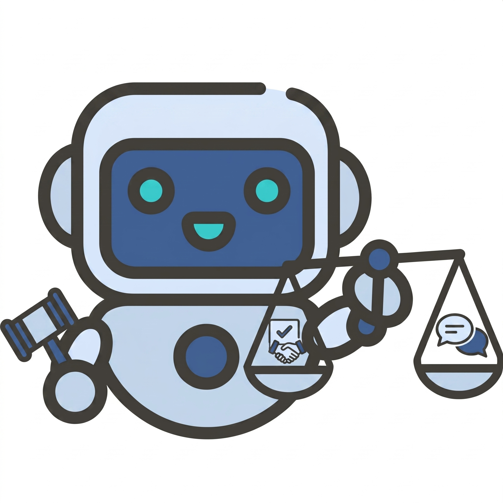

Two parties argue over a real dispute, turn by turn. A mediator watches silently and decides when to step in and what to say to steer the parties toward agreement, without ever taking a side.
The Vanishing App Dispute over Recognition and Ownership
An ousted co-creator wants equity and a public title to reflect their foundational role. The tech company wants a clean cash exit before an upcoming financing round. Positions are locked and the clock is ticking.

If we want LLMs to defuse real disputes, we first need a trustworthy way to measure how well they actually do it.
Building such an evaluation is hard for three reasons, and existing benchmarks fall short on each.
Coverage does not scale
Real disputes carry privacy and legal sensitivity, so existing testbeds are confined to a few expert-authored domains such as bargaining and legal cases. A narrow set of domains overstates a mediator's true ability.
Complexity collapses to one axis
Real conflicts vary in emotion, culture, history, and party count, yet prior testbeds vary only strategic posture. Stacking everything together hides which ability a mediator actually fails on.
Scoring is noisy
Mediation quality emerges across turns, yet per-turn judges score every topic at every turn. Off-topic content distorts the scores and errors compound along the trajectory.
SoCRATES removes all three obstacles at once, so that a mediator's score reflects genuine social skill rather than the narrowness of the test. The next section details how each component works.
Evaluating LLM mediators remains challenging, as mediation unfolds as a real-time trajectory shaped by disputants' shifting emotions, intentions, and context. Existing testbeds rely on a few expert-authored domains, vary mainly strategic posture, and score every turn against every topic, introducing off-topic noise. We introduce SoCRATES, a benchmark for evaluating proactive LLM mediators in realistic, multi-domain testbeds. It constructs scenarios from real conflicts through an agentic pipeline across eight domains, probes five socio-cognitive adaptation axes (strategic posture, party composition, history length, emotional reactivity, and cultural identity), and scores each topic only on the turns that advance it via a topic-localized evaluator. The evaluator reaches 0.82 alignment with human experts, more than doubling a per-turn baseline. Benchmarking eight frontier LLMs, we find that even the strongest mediator closes only about a third of the unmediated consensus gap under diverse and realistic testbeds, with performance varying sharply by socio-cognitive axis, highlighting that progress lies in social adaptation to diverse conditions.
- A unified, automated framework integrating agentic scenario curation, socio-cognitive probing, and topic-localized evaluation in a single pipeline.
- A topic-localized evaluator that scores mediator trajectories on three real-time metrics, correlating with expert judgments at Pearson r = 0.82.
- A comprehensive benchmark of eight proprietary and open-source LLM mediators across diverse conflict domains and socio-cognitive axes.
- Evidence that the strongest mediator closes only roughly a third of the unmediated consensus gap, with gains varying sharply by socio-cognitive axis.
Agentic Scenario Curation
LLM agents search the web for real public disputes across eight domains, recast each into a structured scenario, and filter by rejection sampling, keeping only hard cases that fail to resolve without a mediator.
Socio-Cognitive Probing
Each scenario is perturbed independently along five axes, namely strategic posture, party composition, history length, emotional reactivity, and cultural identity, so any performance shift is attributable to a single axis.
Topic-Localized Evaluation
For each topic, the evaluator scores agreement only at the turns that actively move it and carries scores forward otherwise, supporting three metrics (consensus gain, intervention timeliness, and effectiveness).
A conversation interleaves many topics, and most turns are off-topic noise for any single one. Scoring every topic at every turn (as per-turn judges do) blurs the signal. Our evaluator localizes each topic to the turns that actually advance it.
Localize relevant turns
For each topic, the evaluator first selects only the turns where the parties actually negotiate that topic. For example, the settlement topic is touched on turns 3, 7, 11, 14, 16, 18, 20, 23 to 27, 31, 35, 37, and 39, while the rest are ignored.
Score agreement, carry forward
At each relevant turn it rates agreement on a 1 to 5 rubric. Between relevant turns the last score is carried forward, giving a clean per-topic consensus trajectory free of off-topic noise.
Derive three metrics
From the trajectory we derive consensus gain (overall closure of the agreement gap), intervention timeliness (when the mediator acts relative to escalation), and intervention effectiveness (how much each intervention shifts consensus).
Scoring one topic, step by step
A real negotiation jumps between several topics at once. To measure agreement on just one of them (here, the settlement), the evaluator reads the whole conversation but only scores the turns that actually discuss that topic, the colored cells in the strip below, and skips the rest (the grey cells). That is what topic-localized means. No off-topic turns blur the signal.
The line then shows agreement on this single topic over time, from 1 (impasse) to 5 (agreement). It only updates on a scored turn and stays flat in between. The score jumps right after the mediator steps in (turns 13 and 15).
The topic-localized evaluator aligns closely with expert judgment, far better than baseline raters at both the trajectory and outcome levels.
| Evaluator | Trajectory (r) | Outcome (r) |
|---|---|---|
| Non-expert | 0.331 | 0.527 |
| ProMediate per-turn | 0.372 | 0.432 |
| SoCRATES ours | 0.823 | 0.801 |
Eight LLM mediators, each run on all 600 scenario and condition combinations (4,800 runs total). We report Timeliness, Effectiveness, and Consensus Gain. Click a header to sort.
| Mediator | Timeliness | Effectiveness | Consensus Gain |
|---|---|---|---|
| GPT-5.4-mini Closed | 79.9 | 24.6 | 34.4 |
| Gemini-3.1-Flash-Lite Closed | 80.9 | 24.6 | 33.0 |
| DeepSeek-V3.2 Open | 75.8 | 23.1 | 31.9 |
| Qwen3-235B Open | 76.4 | 24.6 | 30.7 |
| Gemma-4-26B Open | 79.0 | 18.1 | 21.0 |
| Nemotron-3-120B Open | 72.0 | 19.2 | 20.4 |
| Solar-Pro-3 Open | 84.6 | 16.7 | 19.9 |
| Qwen3-30B Open | 84.6 | 19.7 | 15.7 |
| All-mediator Average | 79.2 | 21.3 | 25.9 |
| Mediator | Trans. | Health | Env. | B2B | Policy | Intl. | Legal | Intra. | Avg. |
|---|---|---|---|---|---|---|---|---|---|
| GPT-5.4-mini Closed | 55.6 | 23.6 | 35.0 | 32.0 | 28.2 | 30.3 | 41.2 | 29.5 | 34.4 |
| Gemini-3.1-Flash-Lite Closed | 52.1 | 47.7 | 25.9 | 34.6 | 36.0 | 22.0 | 26.7 | 18.8 | 33.0 |
| DeepSeek-V3.2 Open | 53.3 | 41.2 | 27.6 | 26.4 | 35.4 | 26.6 | 27.0 | 17.8 | 31.9 |
| Qwen3-235B Open | 51.0 | 29.7 | 22.8 | 28.2 | 32.5 | 33.8 | 20.7 | 26.9 | 30.7 |
| Gemma-4-26B Open | 42.9 | 22.9 | 24.6 | 15.8 | 7.1 | 15.9 | 24.4 | 14.6 | 21.0 |
| Nemotron-3-120B Open | 41.9 | 41.1 | 16.7 | 14.5 | 15.8 | 17.7 | 7.0 | 8.3 | 20.4 |
| Solar-Pro-3 Open | 41.8 | 30.1 | 24.3 | 28.3 | 6.6 | 13.4 | 6.0 | 8.7 | 19.9 |
| Qwen3-30B Open | -7.9 | 48.6 | 26.3 | 16.0 | 17.9 | 18.1 | -1.2 | 8.2 | 15.7 |
| All-mediator Average | 41.3 | 35.6 | 25.4 | 24.5 | 22.4 | 22.2 | 19.0 | 16.6 | 25.9 |
Consensus Gain by Mediator
Average across the eight domains. Even the best mediator closes only about a third of the unmediated gap.
Consensus Gain Heatmap Across Domains
Gain swings from Transactional (easy) down to Intra-organizational (hard).
Mediation is hard, and scale alone does not solve it
Average consensus gain caps at 34.4, and no mediator clears half the unmediated gap in any domain. General capability does not directly translate to mediation.
Timeliness without effectiveness
The most frequent interveners (Solar-Pro-3, Qwen3-30B) rank lowest on consensus gain. A good mediator acts at the right moment with the right content.
Domain coverage shapes the verdict
Gain swings from 41.3 (Transactional) to 16.6 (Intra-organizational). A transactional-only benchmark overstates mediation ability.
Mediators have uneven socio-cognitive profiles
Every mediator contracts on at least one axis. Strategy is the sharpest stress test, reactivity degrades all mediators, and culture causes small but systematic declines as distance from U.S. norms grows. Competence comprises distinct abilities acquired unevenly.
The five axes let us pinpoint which ability constrains each mediator, rather than reading a single aggregate score.
Where each mediator is strong and weak
Each mediator's consensus gain is profiled across the general condition and the five axes, where a larger enclosed area means a more well-rounded mediator. On four of the five axes the area grows with model capability, yet every mediator collapses on at least one axis. Even two top-tier models with similar overall scores differ in where they fail. GPT-5.4-mini and DeepSeek-V3.2 lose far more under multi-state tracking than Gemini-3.1-FL and Qwen3-235B. Mediation competence is a profile, not a single number.

How strategy, emotion, and culture each take a toll
Here we vary one axis at a time and measure the change from the neutral “general” condition, where negative means worse. Strategy is the sharpest stress test. Every non-collaborative posture lowers consensus gain, with the steepest drops under Competing and Accommodating, and the strongest overall model, Qwen3-235B, falls the most. Emotion degrades every mediator once both parties are reactive. Culture causes small but systematic declines as cultural distance from U.S. norms grows.

When to intervene depends on the situation
Plotting intervention effectiveness over the course of a conversation shows that the best moment to step in moves with the condition. For strategy and emotion, effectiveness peaks early, because stances and feelings must be reframed before they harden. For multi-state tracking and long-context, it peaks late, when enough context has built up for summarizing to help. Stronger mediators time their interventions to each window, while weaker ones trace flat curves and miss the moment.

SoCRATES evaluates proactive LLM mediators in realistic, multi-domain testbeds. By grounding scenarios in real public disputes, probing five socio-cognitive axes independently, and scoring each topic only on the turns that advance it, it reveals that even the strongest mediator closes only about a third of the unmediated consensus gap, with performance varying sharply by conflict domain and socio-cognitive axis. Progress in LLM mediation lies not in raw capability but in social adaptation to diverse conditions.
To be filled